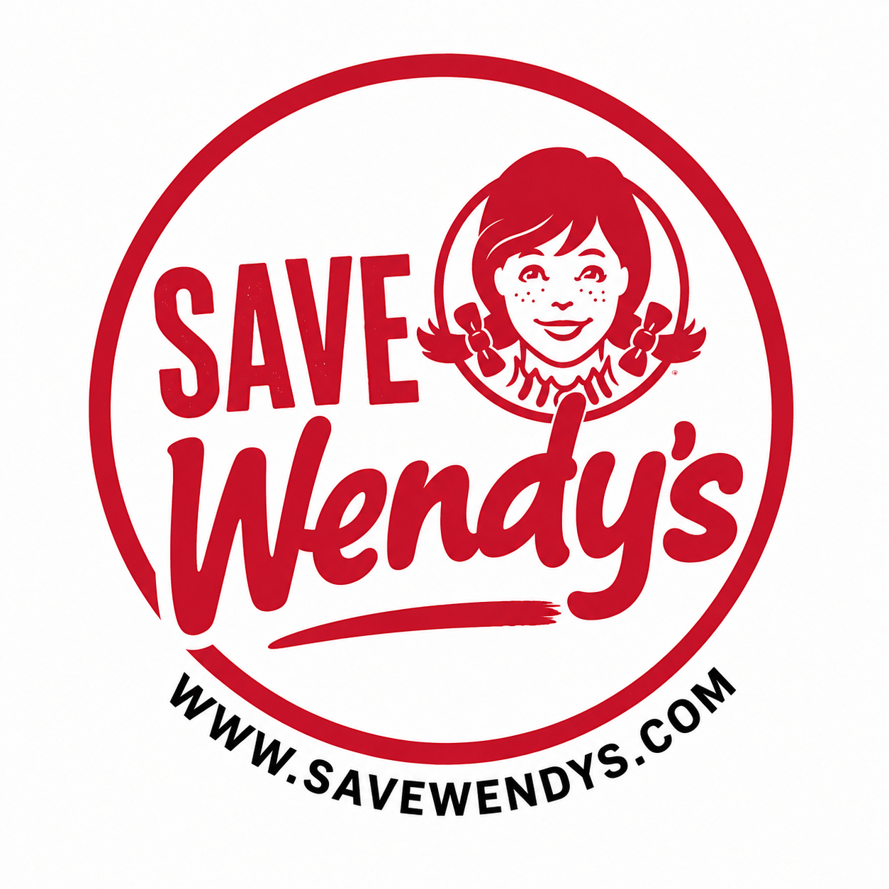
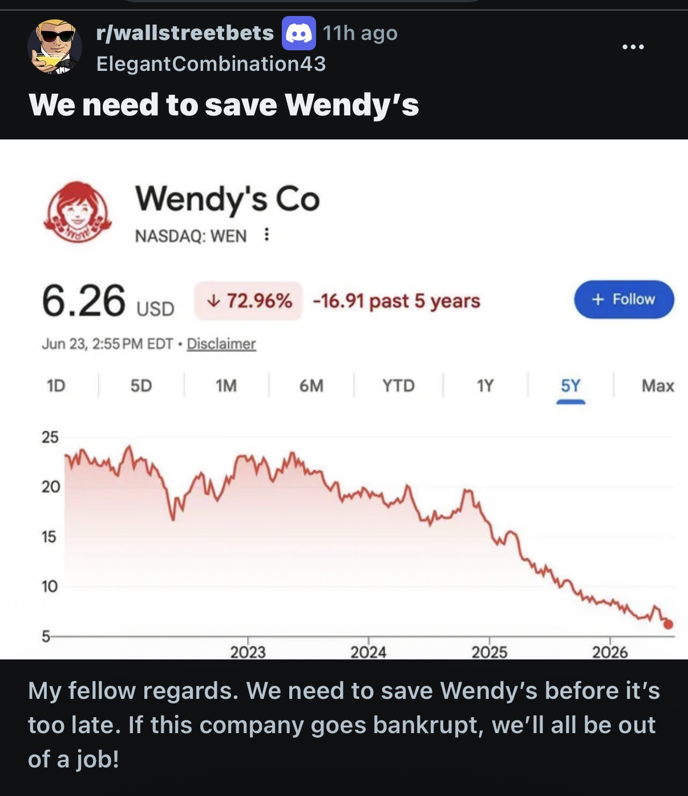

A movement built by fans. Not a corporation. Not an ad. Just people who believe Wendy’s is worth saving.
Wendy’s stock has fallen heavily over the past few years, and the brand has been struggling with declining momentum.
What started as a WallStreetBets post quickly turned into something bigger — a community rallying around one idea:
We don’t want Wendy’s to fade away.

A single post sparked a movement. From memes to momentum, “Save Wendy’s” became more than a joke — it became a mission.